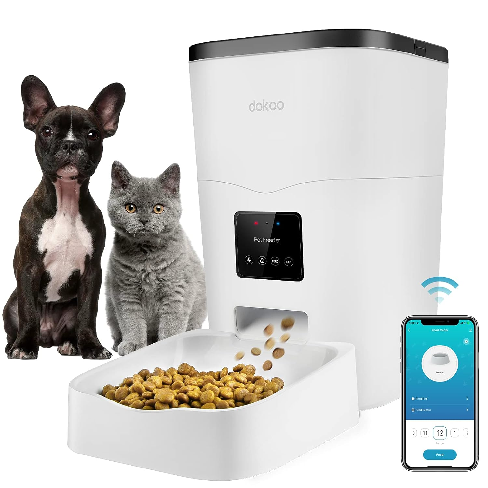

Design Tech Faculty
• Team Members: Anxin Lian, Mercy Akande
An automated feeder that uses computer vision and machine learning to distinguish between different pets in the same household. Each pet is recognized individually, and the system dispenses the right food, ensuring fairness and tailored nutrition.
- Basic knowledge of AI concepts, including computer vision and machine learning fundamentals.
- Programming skills in Python, Java, and JavaScript, with experience in applying APIs and simple ML models.
- Foundations in interaction design and UX design, focusing on usability, user flows, and prototyping.
- Experience creating design prototypes using tools such as Figma, Axure, and physical computing with Arduino.
- Understanding of speculative and critical design methods, and their role in questioning assumptions in technology.
| Question | Why It Matters |
|---|---|
| What does it mean to recognize each pet as an individual rather than a generic consumer of resources? | Raises questions about identity, dignity, and the boundaries of personalization in technology. |
| Should technology merely enforce human decisions, or should it embody ethical values of fairness and care? | Challenges us to consider whether design should stay neutral or actively shape behaviors and relationships. |
| How might a system enforcing boundaries between species reflect human systems of classification? | Connects pet care to broader debates about equity, gatekeeping, and inclusion. |
| Can a “smart feeder” provoke reflection on resource distribution? | Positions the feeder as a metaphor for questioning equality vs. equity in collective life. |
Context from Radical Software (1970s):
- The radical spirit emphasized decentralization, personalization, and questioning dominant structures.
- Media tools were reimagined as instruments to redistribute agency and provoke reflection.
Applied to our feeder:
- De-standardization: Recognizes each pet’s species and identity, enforcing appropriate food boundaries.
- Decentralization: Feeding decisions remain with the owner while the system ensures fairness.
- Empowerment: Owners manage multi-pet households ethically and fairly.
- Ethical provocation: Embodies personalization and raises questions about equality vs. equity.
Whenever I gaze at Manhattan from our studio, I see a city in constant flux—shifting sun, changing light, evolving activity. Yet our buildings and products remain rigid, blind to these changes. How can materials be designed to make buildings and products responsive, context-aware, rather than static and rigid.
- Knowledge of material intelligence, responsive and adaptive materials in architecture and product design.
- Experience with computational design tools and parametric modeling.
- Familiarity with sensor integration and basic electronics for responsive systems.
- Foundations in fabrication skills, including digital and physical prototyping methods for material
This project questions focus on material intelligence and invention:
| Question | Why It Matters |
|---|---|
| Why do buildings and products remain rigid despite constant environmental changes? | Encourages reflection on the limitations of current design and the gap between static objects and dynamic contexts. |
| How can materials sense, respond, or adapt to environmental changes? | Explores material agency and interaction with surroundings. |
| Can responsive materials provoke new ways of living and interacting with urban environments? | Positions materials as active participants shaping experiences and behavior. |
- The radical design spirit emphasizes questioning assumptions, exploring material agency, and creating systems that respond intelligently to context.
- Materials are instruments that sense, respond, and engage with their environment.
Applied to the project:
- De-standardization: Buildings and products adapt to environmental changes, user behavior, and situational needs.
- Decentralization: Control is shared between the material, environment, and user.
- Empowerment: Materials empower designers and users to create adaptive, context-aware systems.
- Ethical provocation: Embedded responsiveness challenges static design assumptions.
Gesture-Controlled Lamp with Bio-Inspired, Shape-Morphing Shade
- 3D-printed shell with bio-inspired patterns: The lampshade/shell is printed with natural motifs (e.g., honeycomb lattices, leaf venation, pinecone scales) to modulate diffusion and strength.
- Shape-morphing shade: Inspired by biological/natural behaviors, the shade can change form (living hinges, TPU ribs, compliant mechanisms) to widen/focus the beam and vary light quality.
- Gesture control via Arduino + camera/IR: An Arduino connects to a mini camera or IR/ToF sensor; lightweight CV recognizes gestures (wave, number signs) to toggle power, dim/brighten, and change color temperature/hue.
Gesture-Controlled Lamp with Bio-Inspired, Shape-Morphing Shade
- Gesture CV: Hand-pose/keypoint models can run on an edge host (ESP32/RPi) or classify sensor streams locally.
- Sensing fallback: IR proximity/ToF ensures reliable “wave” detection in low-light when CV confidence drops.
- Light engine: Addressable LEDs enable smooth dimming and CCT/RGB mixing; PWM/constant-current drivers manage heat and flicker.
- Fabrication: PETG/TPU prints support compliant joints and living hinges; parametric CAD eases pattern iteration.
- UX & Safety: Consider glare (UGR), CRI, thermal paths; include a manual override and status LED.
| Question | Why It Matters |
|---|---|
| Does sensing in private spaces risk surveillance creep? | Prefer on-device processing, a hardware shutter for the camera, and clear indicator lights. |
| Who benefits from touch-free interaction? | Improves accessibility for users with limited mobility; gesture sets should be inclusive and culturally aware. |
| Are we manipulating mood/productivity with light? | Lighting affects circadian rhythm; provide transparency, presets, and user control. |
| What about longevity and repair? | Modular electronics and printable spares support right-to-repair and reduce e-waste. |
- De-standardization: A lamp that adapts its form and output to the situation, not the other way around.
- Decentralization: Privacy-preserving, on-device gesture recognition—no cloud dependency by default.
- Empowerment: Hands-free control of intensity, color, and beam spread; users compose their ambient light.
- Ethical Provocation: Sparks discussion about sensing in intimate spaces and agency over ambient media.